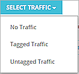

Deployment Overview
This document describes how to set up QoS for traffic along a communication path that includes a Mitel Mobile Client, WatchGuard AP420, WatchGuard FireboxV, and the Mitel Cloud VoIP service. The document does not include information about switch configuration for QoS or VLANs. If your deployment uses a switch, verify it can be configured for QoS and VLANs.
Integration Summary
To complete this integration, you must have these versions of hardware, software, and services:
- Mitel Connect — Mitel Cloud Portal
- WatchGuard:
- AP420 Wi-Fi Cloud Account
- FireboxV with Fireware v12.1
Test Topology
Configure Your Firebox with VLANs and Policies
In this example, we set up three VLANs — one for AP management, one for general use, and one for your mobile phone. The network traffic for the phone VLAN uses QoS markings for priority.
For more information on how to configure your Firebox for QoS, see About QoS Marking in Fireware Help.
To configure an interface from, Fireware Web UI:
- Select Network > Interfaces. Select an interface to configure and select Edit.
- In the Interface Name (Alias) text box, type the name for the VLAN interface.
- (Optional) In the Interface Description text box, type a description for the VLAN.
- From the Interface Type drop-down list, select VLAN.
- Click Save.
To create a VLAN and assign it an interface from Fireware Web UI:
- Select Network > VLAN.
The VLAN page appears, with a list of existing user-defined VLANs and their settings. - Click Add.
The VLAN Settings page appears. - In the Name text box, type a name for the VLAN. The name cannot contain spaces.
- (Optional) In the Description text box, type a description of the VLAN.
- In the VLAN ID text box, or type or select a value for the VLAN.
- From the Security Zone drop-down list, select the zone you want to assign.
- In the IP Address text box, type the address of the VLAN gateway.
- In the Select a VLAN tag setting for each interface section, select one or more interfaces.
- From the Select Traffic drop-down list, select Untagged Traffic.
To configure DHCP for a VLAN from Fireware Web UI:
- Select the Network tab.
- In the DHCP Settings section, from the DHCP Mode drop-down list, select DHCP Server.
- In the Domain Name text box, type an optional domain suffix to provide to clients.
- To change the default lease time, from the drop-down list at the top of the page, select a different time interval.
- Configure the Address Pool, Reserved Address, DNS Servers, WINS Servers, and DHCP Options sections. Click Save.
- Add the other two VLANs for general Wi-Fi and VoIP Wi-Fi. From the Select Traffic drop-down list, select Tagged Traffic. This creates two tagged VLANs for Wi-Fi traffic.

This is the example configuration for all available VLAN interfaces.
Add two policies to use for General Wi-Fi and AP Cloud Management. The WatchGuard Wi-Fi Cloud requires HTTP TCP ports 80 and 443 and UDP ports 3851 and 3852 to be open in an outbound policy. This example uses the WG-Cloud-Managed-WiFi packet filter policy. For more information about WatchGuard Wi-Fi Cloud, see About WatchGuard Wi-Fi Cloud.
The first policy handles traffic for AP management. To add a firewall policy from Fireware Web UI:
- Select Firewall > Firewall Policies.
- Click Add Policy.
- Select Packet Filter. From the drop-down list, select WG-Cloud-Managed-WiFi .
- Click Add Policy.
Policy settings appear.

- In the From section, remove the Any-Trusted alias. Select Add.
The Add Member page appears. - From theMember type drop-down list, select Alias. Select AP Management.
- Click OK.
- Click Save to add the policy.
Add another policy for general Wi-Fi traffic to match the corporate policy for filtering traffic.
The last policy is specific to traffic that passes through the Mitel mobile phone communication. Mitel documentation includes the Mitel Connect Cloud Ports necessary for communication to be successful. These ports include:
- TCP/UDP 5600 SIP
- TCP 5061 SIPS
- TCP 80 HTTP
- TCP/UDP 443
- TCP 8001 Admin
- TCP 31451 - 31471 ECC Supervisor
- UDP 10000 - 65535
To pass Mitel mobile phone communication traffic, add a policy from Fireware Web UI:
- Select Firewall > Firewall Policies > Add Policy.
- Select Custom policy type. Click Add.
A new custom policy type is created.
- In the Protocol section, add each TCP or UDP port until the list is complete.
The Select a policy type page appears.
- Click Save.
The Add Firewall Policy page appears with your custom selections. - Click Add Policy.
- Select the Settings tab.
- In the From section, replace the Any-Trusted alias with the alias you created for the VoIP VLAN. Click Save.

You must have an active DNS policy for Mitel MiCloud communication. You can modify the policy you created or add this subnet to your current DNS policy.
Apply QoS to Firewall Policies
The QoS markings you specify in a policy apply to all traffic that uses the policy. QoS markings in policies take precedence over QoS settings configured for interfaces.
You must enable the global QoS setting before you can configure QoS settings in a policy.
To enable QoS globally, from Fireware Web UI:
- Select System > Global Settings.
- On the Networking tab, below Traffic Management and QoS, select the Enable all Traffic Management and QoS features check box.
- Click Save.
To configure QoS marking, from Fireware Web UI:
- Select Firewall > Firewall Policies. Select the check box for the Mitel Cloud Portal policy. Use the Action drop-down list to edit the policy.
- Click the Advanced tab.
- Select Override per-interface settings.
The QoS page appears. - From the Marking Type drop-down list, select an option. For this example we chose DSCP.
- From the Marking Method drop-down list, select an option. For this example we chose Preserve.
- If you selected Assign, from the Value drop-down list, select a marking value.
If you selected the IP Precedence marking type, select a value from 0 (normal priority) through 7 (highest priority).
If you selected the DSCP marking type, the values are 0–56. - From the Prioritize Traffic Based On drop-down list, select QoS Marking.
- Click Save.
WatchGuard External Interface Configuration for QoS
Many Internet Service Providers drop the marking on the QoS packet when it is received. Make sure you understand how QoS is handled by your ISP before you configure the external interface of your Firebox to pass QoS marking.
To configure an external interface for QoS, from Fireware Web UI:
- Select Network > Interfaces.
- Highlight the external interface. Select Edit.
- Select the Advanced tab.
- From the Marking type drop-down list, select DSCP.
- From the Marking methoddrop-down list, select Preserve.
- Click Save.
WatchGuard Wi-Fi Cloud Basic Configuration
For detailed information on WatchGuard Wi-Fi Cloud AP deployment, see the Getting Started Guide.
These instructions use Manage for the Wi-Fi Cloud configuration. You can now also perform these configuration steps with the Discover application. For more information, see About Discover.
WatchGuard Wi-Fi Cloud VLAN and QoS Assignment
To create the SSID profile for general Wi-Fi use:
- Log in to your WatchGuard Cloud Wi-Fi account.
- Select My WatchGuard > Manage Wi-Fi Cloud. Select Manage.
- Select Configuration > Device Configuration > SSID Profiles.
- Click Add New Wi-Fi Profile.
The Add Wi-Fi Profile dialog box appears.
- Type a Profile Name and SSID name. Add the appropriate security settings for your general traffic.
- Expand the Network section. Add the VLAN ID for general traffic.
- Click Save.
- Select Add New Wi-Fi Profile to add the SSID profile for Mitel VoIP VLAN.
- Type a Profile Name and SSID name. Add the appropriate security settings for VoIP traffic.
- Expand the Network section. Add the VLAN ID for the VoIP subnet.
- Expand the Traffic Shaping & QoS section. Select the Enable QoS check box.
- Set the SSID Priority to Voice.
- Select the 802.1p Marking check box. This enables the Upstream Marking to map to a priority subject to a maximum of the selected SSID priority and set in the 802.1p header and the IP header.
- Select DSCP to enable the DCSP/TOS Marking.
- Set the Priority Type to Fixed. All traffic for this SSID must be transmitted at the selected priority regardless of the priority indicated in the 802.1p or IP header.
- Select Save.
For more information on how to prioritize traffic with Wi-Fi Cloud, see Quality of Service (QoS).
WatchGuard Wi-Fi Cloud Template Assignment
To transfer the created settings to a template to apply to a device, from WatchGuard Wi-Fi Cloud:
- Select Manage > Configuration > Device Configuration > Device Templates.
- Click Add Device Template.
The Add Device Template dialog box appears. - In the Template Name text box, type a descriptive name for this template.
- Expand the Device Settings section.
- Expand the Device Password section and specify a user name and password.
The New password is applied on all the devices associated with the device template. - Expand the Radio Settings section.
- Click Define settings for model and select your AP model.
- For each radio, click Add SSID Profile and select the created SSID profiles for each radio.
- Specify the other radio settings as required for your network. Click Save. If this template is needed for a different location, select the Copy-to icon to copy the template.
Apply the Device Template to an AP
The configuration is complete after you mark the template as default for the selected location. Apply it to the APs in the selected location. APs deployed in the future are configured with the settings in the default template.
- Open Manage and select the desired location.
- Select Configuration > Device Configuration > Device Templates.
- Click Make Default.
- To apply the template to the APs in this location, click Yes.
Test the Integration with the Mitel Phone Application
- Get a Mitel MiCloud user account with user names, passwords, and assigned phone numbers.
- Download and install the Mitel Connect App for iOS or Android.
- Connect to the configured VoIP SSID.
- Open the Mitel application and type the user name, password, and assigned phone number.